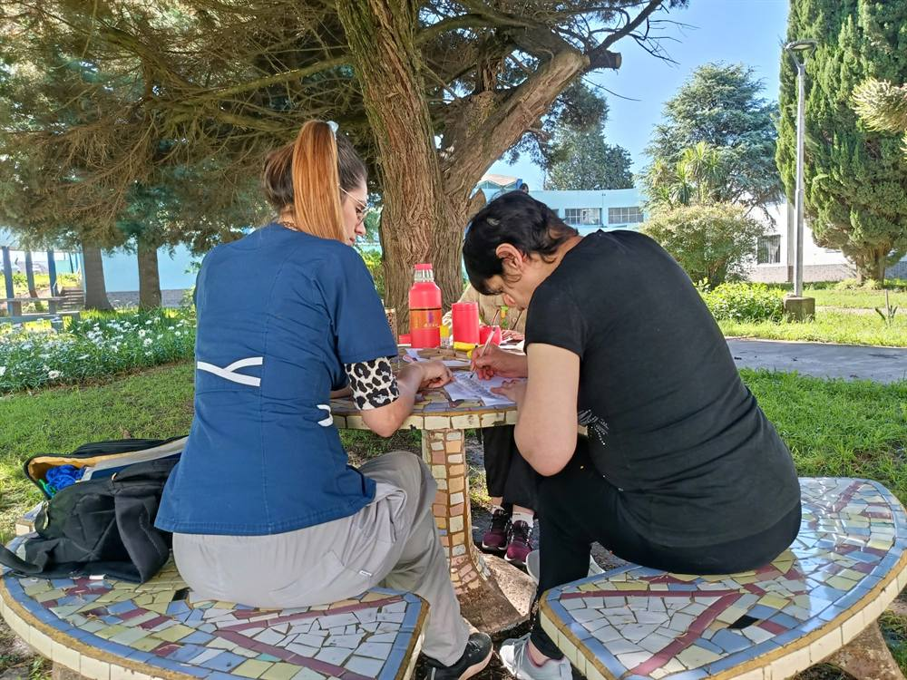

Tu ayuda se convierte en consuelo
Padrinos, bienhechores, empresas y voluntarios sostienen día a día nuestro hogar. Elegí cómo querés acompañarnos.
Sumate a nuestra misión
El sostenimiento diario de nuestra obra es posible gracias a la Providencia y al corazón generoso de personas, familias y empresas de Río Cuarto que eligen transformar realidades.
¿Qué es ser Padrino o Madrina del Cottolengo?
Es construir un vínculo de amor, cercanía y compromiso sostenido con la vida de nuestros residentes.
Más allá del aporte económico mensual —que nos permite garantizar una atención integral y profesional—, el padrinazgo significa presencia afectiva: acompañar su día a día y sostener su hogar en el tiempo.
¿Cómo hacerte Padrino o Madrina?
- Elegí tu aporte mensual: definí el monto a tu alcance mediante débito automático o transferencia bancaria programada.
- Completá tu adhesión: escríbenos por correo o WhatsApp con tus datos para registrarte en el Programa de Padrinos y Madrinas.
- Recibí novedades de la casa: te compartimos noticias, actividades y mejoras logradas gracias a tu acompañamiento.
cottolengoriocuarto@consolacion.org
Quiero ser Bienhechor / otras formas de colaborar
Si deseás colaborar de manera puntual o apoyar proyectos específicos, podés hacerlo de diversas maneras:
Donación Única
Una contribución por única vez mediante transferencia bancaria oficial para el funcionamiento general o mejoras edilicias.
Insumos Prioritarios
Alimentos no perecederos, pañales para adultos, higiene personal, ropa de cama y toallas, insumos de enfermería y materiales de talleres (consultanos las necesidades vigentes).
Bonos, Rifas y Eventos
Participá y ayudanos a difundir nuestras campañas y eventos a beneficio.
Legados y Herencias
Dejá una huella de amor perdurable con un legado testamentario a favor de la Congregación para el sostenimiento del Cottolengo.
cottolengoriocuarto@consolacion.org
Colaboración de empresas y beneficios fiscales
Invitamos a empresas, comercios, productores agropecuarios e instituciones de Río Cuarto y la región a desarrollar acciones de Responsabilidad Social Empresaria (RSE) con impacto directo y transparente.
Infraestructura o Equipamiento
Accesibilidad, climatización, equipamiento médico o remodelación de pabellones, con reconocimiento en la memoria anual y placas de agradecimiento.
Aportes Periódicos o Únicos
Contribuciones al sostenimiento operativo de los programas de salud y rehabilitación.
Donación en Especie o Servicios
Alimentos, insumos de limpieza, mantenimiento técnico, logística o servicios profesionales.
Voluntariado Corporativo
Jornadas solidarias de trabajo en equipo junto a los colaboradores de tu empresa en el predio.
Respaldo jurídico y beneficios fiscales (República Argentina)
- Deducción en el Impuesto a las GananciasConforme al Artículo 85, inciso c) de la Ley de Impuesto a las Ganancias (t.o. 2019 y normativa reglamentaria de ARCA / ex AFIP), las donaciones efectuadas a instituciones religiosas reconocidas y entidades de asistencia social exentas (Art. 26, incisos e y f) son deducibles de la base imponible hasta el límite del 5% de la ganancia neta del ejercicio.
- Comprobantes OficialesEmitimos el recibo oficial correspondiente para respaldo contable y fiscal de tu empresa (los aportes dinerarios deben realizarse mediante transferencia o depósito bancario a la cuenta institucional oficial para habilitar su deducción impositiva).
administracion.cottolengoriocuarto@consolacion.org
Regalá tu tiempo y tu corazón
Nuestros voluntarios son un puente vivo entre la comunidad de Río Cuarto y nuestros residentes, sumando alegría, escucha y compañía bajo el carisma de la Consolación.
Sus tareas enriquecen la vida social, recreativa y espiritual de los residentes, complementando —y nunca reemplazando— la labor del equipo profesional y de enfermería.
- Acompañamiento Afectivo y RecreativoCharlas, lectura, juegos de mesa, música y paseos por parques y galerías.
- Apoyo en TalleresJunto a los profesionales en arte, manualidades, huerta y recreación.
- Acompañamiento EspiritualCelebraciones religiosas y momentos de oración comunitaria.
- Eventos y CampañasCumpleaños, fechas patrias, colectas y clasificación de donaciones en ropería.

¿Cómo sumarte como voluntario/a?
- Escríbenos: contanos tu disponibilidad horaria y tus intereses o habilidades.
- Entrevista e Inducción: con el Área de Trabajo Social y la Dirección.
- Firma del Compromiso e Inicio: te integrás a tu equipo de referencia.
Nuestro compromiso mutuo
En cumplimiento de la Ley Nacional N° 25.855 de Voluntariado Social y los protocolos de protección de derechos de la Congregación, toda persona que ingresa realiza una charla inicial de inducción y firma el Compromiso de Voluntariado Institucional, asumiendo:
Buen Trato y Respeto
Trato cálido, paciente y respetuoso hacia residentes, trabajadores y religiosas.
Confidencialidad e Imagen
Reserva absoluta y compromiso de no tomar ni difundir fotos o videos sin autorización de la Dirección.
Constancia y Puntualidad
Cumplir días y horarios para dar previsibilidad y estabilidad afectiva.
Normas Sanitarias y Altruismo
Respeto por los protocolos de higiene y carácter solidario y no remunerado.
cottolengoriocuarto@consolacion.org